🎨✨ Art and Handicrafts of Goa – A Blend of Heritage and Creativity 🧵🖌️
🖼️ Azulejos Tiles – Portuguese Legacy in Art
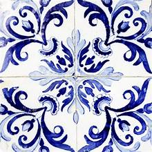
Azulejos Tiles 🎨
Hand-painted ceramic tiles depicting Goan life, culture, and traditions.
Reflects Portuguese influence and vibrant color patterns.
Pottery and Clay Art 🏺
Traditional clay items including diyas, pots, and figurines.
Crafted with precision and used extensively during festivals.
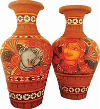
Traditional clay items including diyas, pots, and figurines.
Crafted with precision and used extensively during festivals.
🧵 Handicrafts – Masterpieces of Goan Artisans
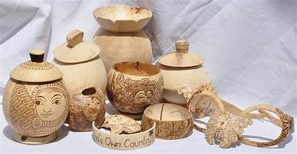
Coconut Shell Craft 🌴
Intricately carved items made from coconut shells.
Used to create decor items, jewelry, and lamps.
Brass and Metal Craft ⚒️
Beautifully handcrafted brass and copper artifacts.
Showcases exquisite detailing in utensils and decorative items.
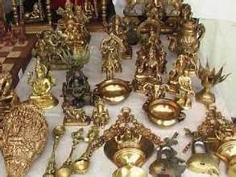
Beautifully handcrafted brass and copper artifacts.
Showcases exquisite detailing in utensils and decorative items.
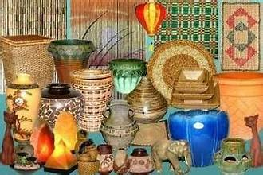
Bamboo Craft 🎋
Eco-friendly household items made from bamboo and cane.
Popular for baskets, mats, and decorative products.
Jute Craft 🎍
Environmentally friendly products crafted from jute fibers.
Includes bags, mats, and home decor items.
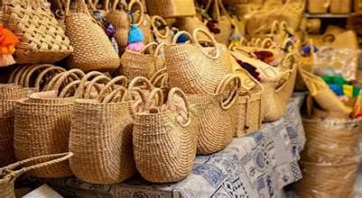
Environmentally friendly products crafted from jute fibers.
Includes bags, mats, and home decor items.
🎭 Intricate Shell Craft – Gifts from the Sea
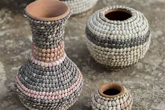
Shell Craft 🐚
Unique artifacts crafted from seashells found along Goa’s beaches.
Used to create jewelry, decorative pieces, and souvenirs.
Sea Shell Jewelry 🌊
Handcrafted jewelry made from natural seashells.
Symbolizes Goa’s coastal charm and maritime culture.
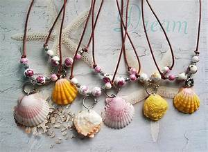
Handcrafted jewelry made from natural seashells.
Symbolizes Goa’s coastal charm and maritime culture.
🏺 Clay and Terracotta Craft – Earthy Elegance
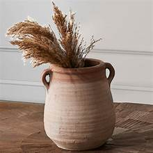
Terracotta Craft 🏺
Artisans craft figurines, lamps, and vessels from clay.
Associated with festivals and religious rituals.
Pottery and Earthenware 🪵
Traditional earthen pots and utensils crafted by local artisans.
Used in cooking, rituals, and home decor.
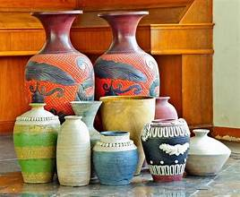
Traditional earthen pots and utensils crafted by local artisans.
Used in cooking, rituals, and home decor.
🧵 Textile Weaving – Vibrant Threads of Goa
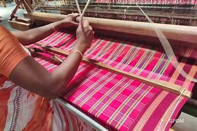
Kunbi Saree 🧣
Traditional handwoven saree worn by the Kunbi community.
Recognized for its simple yet elegant design.
Handloom Weaving 🌸
Skillful weaving of cotton and silk fabrics.
Produces intricate designs in sarees, shawls, and home textiles.
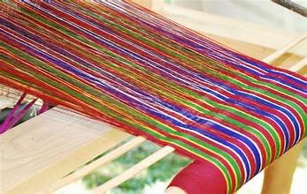
Skillful weaving of cotton and silk fabrics.
Produces intricate designs in sarees, shawls, and home textiles.
🎸 Wooden Carvings – Legacy in Wood
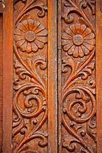
Wood Carving 🪵
Artistic carvings used in creating decorative furniture and idols.
Reflects intricate craftsmanship and attention to detail.
Furniture and Decor 🪑
Elegant wooden furniture crafted with detailed carving.
A blend of Goan heritage and modern design.
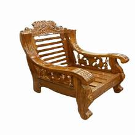
Elegant wooden furniture crafted with detailed carving.
A blend of Goan heritage and modern design.
🎭 Festival and Folk Art
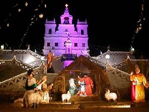
Festival Art 🎉
Vibrant decorations and artwork displayed during Christmas and Carnival.
Reflects the festive spirit of Goa.
Chitari Art 🎨
Unique paintings depicting traditional Goan life and festivals.
Often used in religious and cultural events.
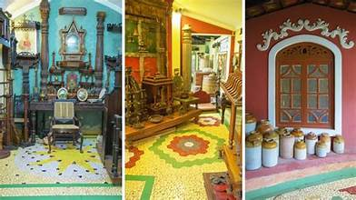
Unique paintings depicting traditional Goan life and festivals.
Often used in religious and cultural events.